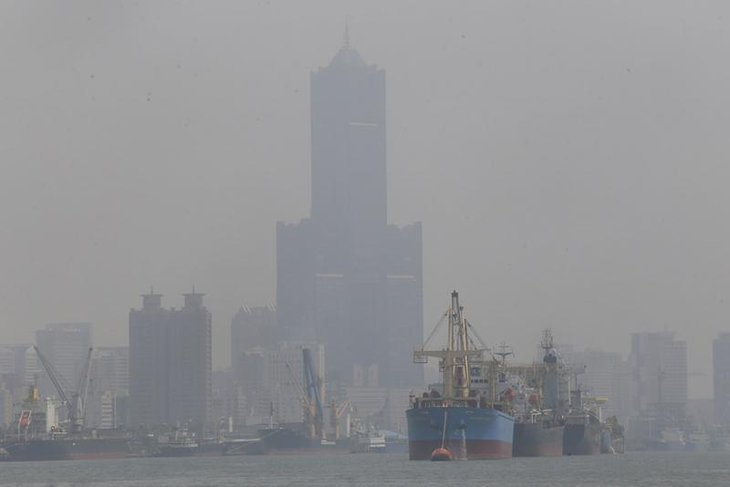

「對症下藥」、「治標要治本」，空氣汙染也如此，首先我們得了解什麼是空氣汙染？又會對我們的身體健康和環境帶來怎麼樣的影響？更重要的是我們要知道：空氣汙染是怎麼樣產生的？又是該如何處理與面對的。 空氣汙染是甚麼？又會對我們的身體健康和環境帶來怎麼樣的影響？空氣汙染就是空氣中的物質，對人類和生態環境産生有害影響
我們可以透過行政院環境保護署，每天針對空氣汙染所提供的指標，得知當天空氣品質狀況，應在空氣汚染高的日子，減少戶外體力消耗及減少在戶外逗留的時間，國內外研究發現：都市中PM2.5暴露量最高的駕駛，並非製造空氣污染的汽車駕駛員，而是低碳、環保的腳踏車，而腳踏車除了是項代步工具，又有運動效果，所以吸入的空氣污染物也最多，甚至專家學者直言：「在尖峰時段的都會馬路邊騎車，實在很傻。」
室內的空氣品質，通常與當地生活習慣、社區環境具有直接關聯性，專家指出：「即便家人只是在陽台吸菸，室內PM2.5濃度還能飆到300～400個單位。附近的宮廟燒香、工廠排放廢氣的時候，家裡PM2.5也能衝破上百單位，並持續一段時間。 」。減少抽菸，除了減少空氣汙染，更是位自己與家人的身體健康著想。減少駕駛自小客車，善加利用大眾運輸工具，除了減少交通車流量的阻塞問題，更減少對空氣造成的汙染問題。
如前述方法一，無法避免戶外體力消耗，普遍來說會戴上口罩來自保，應注意外科口罩、一般口罩及N95防護口罩，能夠減少吸入的汙染物，雖然外科口罩可以過濾較大的懸浮粒子，但研究顯示此類口罩並不能有效過濾10微米以下的懸浮粒子，更不能過濾2.5微米以下的微細懸浮粒子。 而我們總會認為使用防護口罩（如N95防護口罩）時，效果會比一般醫療用與普通口罩來的好，但其過濾功能將視乎口罩能否緊貼面部，容易造成長時間佩戴防護口罩，會令人感到不舒適，使用時亦須加倍用力呼吸。但這些口罩對預防吸入一氧化碳、二氧化氮、臭氧和二氧化硫等氣體污染物效果不大。
1、 通勤時間選擇大眾運輸，少騎車走路:因為通勤時間車輛數眾多，空氣汙染程度嚴重，搭乘大眾運輸工具，除了減少擁擠龐大的車流量，更能減少暴露於空汙中。
2、散步挑小巷，遠離大馬路:為小巷路較小條，想要穿越通常會以步行、腳踏車等，造成的汙染也會較大馬路來的低，除了減少接觸空汙，更能減少行走大馬路的交通危險。
3、盡量別待在公車專用道:因為專用道是公車停留待客的地方，空氣汙染層度較高，別待在公車專用道也可以減少危險發生。
4、空污嚴重時，減少戶外體力消耗，及減少在戶外逗留的時間。
5、上山呼吸新鮮空氣，至少要超過1千～2千公尺。
6、室內不抽菸、不燒香、不點蚊香、勤打掃減少灰塵、使用抽油煙機。
7、住處遠離宮廟和工廠。
8、要求政府：使用替代能源、加速總量管制、課徵空污健康捐、查緝烏賊車。
9、要求自己：減少垃圾、節制消費、抵制無良企業、積極參與公共事務。